Texture Analysis of Landsat Imagery: Deep-Learning-Based Methods
Hand-crafted texture measures are designed by people: a co-occurrence matrix, a Gabor filter, a binary pattern.
Overview
Convolutional neural networks (CNNs) learn their filters from millions of images, and their early layers turn out to be excellent general-purpose texture descriptors. This notebook explains how CNNs represent texture, extracts feature maps from an ImageNet-pretrained ResNet-18 for a Landsat 9 scene over Las Vegas with geolattice.rsense.texture.deep_texture_features, compares layers and band choices, uses the features for tile-level search and clustering, and relates them to the hand-crafted measures of the previous notebooks.
Image texture in brief
Spectral values tell us what a pixel is made of; texture tells us how pixel values are arranged around it. Texture is the spatial variation of gray levels inside a neighbourhood and describes properties such as smoothness, coarseness, regularity, directionality and contrast. Haralick, Shanmugam and Dinstein (1973) noted that tone and texture are always present together in an image, but one may dominate the other depending on the scene.
At Landsat’s 30 m resolution many land-cover classes overlap spectrally: urban fabric, bare soil and rock are all bright and dry in an arid scene; crop types or forest stands can share the same NDVI; rough terrain mixes lit slopes and shadow within a few pixels. Texture separates such classes because it responds to pattern, not only to brightness, and texture layers are routinely stacked with bands and indices as predictors in land-cover classification, urban mapping, forest-structure modelling and soil mapping.
Methods are usually grouped into six families. This series covers them in five notebooks:
Markov Random Field energy, fractal dimension, autoregressive model
09_07_05
Deep-learning-based texture (this notebook)
Pretrained CNN feature maps
All methods come from geolattice.rsense.texture. Every function accepts a 2-D xr.DataArray (or NumPy array) and returns a georeferenced result with the same shape as the input; inputs with leading dimensions (band, time, polarization) are processed slice by slice, and multi-feature methods return an xr.Dataset with one variable per feature.
Theory: how a CNN describes texture
Convolution layers. A CNN applies a stack of learned filter banks. Layer \(\ell\) convolves its input \(x^{(\ell-1)}\) (with \(C_{\ell-1}\) channels) with \(C_\ell\) kernels \(w^{(\ell)}_k\), adds a bias and applies a nonlinearity (ReLU, \(\max(0, z)\)):
Strided convolutions and pooling halve the resolution at each stage, so deeper layers see larger areas (a larger receptive field) with more channels. Each output channel is a feature map: the response of one learned filter at every location, exactly like one Gabor energy map, but with filters learned from data instead of designed by hand.
What the layers learn. Visualizations of trained networks (Zeiler and Fergus 2014) show a clear hierarchy:
For texture, the early and middle stages are the most useful: late layers are specific to the ImageNet object categories, while early layers transfer to almost any image domain.
Texture as feature statistics. Gatys, Ecker and Bethge (2015) showed that the correlations between feature maps, the Gram matrix\(G_{ij} = \sum_{x} F_i(x)F_j(x)\), capture a texture so completely that new images with the same texture can be synthesized from it. Cimpoi, Maji and Vedaldi (2015) pooled CNN feature maps into orderless descriptors (“deep filter banks”) that outperformed hand-crafted texture features on material and scene recognition. The mean of each feature map over a region (reduce="mean" below) is the simplest such pooled descriptor.
Transfer to remote sensing. Penatti, Nogueira and dos Santos (2015) and Hu et al. (2015) showed that ImageNet-pretrained CNNs, used as fixed feature extractors without retraining, beat hand-crafted descriptors for aerial and satellite scene classification. Two practical issues arise with multispectral imagery:
Three input channels. ImageNet networks expect RGB. We pass three bands (a colour-infrared composite NIR-red-green, true colour, or one band repeated three times).
Resolution and object size. ImageNet objects span hundreds of pixels; at 30 m, a city block is only 3 to 5 pixels. Early stages, whose receptive fields are small, match Landsat best.
ResNet-18 feature stages
deep_texture_features(img, model_name, layer, reduce) uses timm to build the backbone with features_only=True and returns the channels of stage layer:
layer
Stage
Channels
Stride
Receptive field
Ground footprint at 30 m
0
stem (7 × 7 conv)
64
2
7 px
210 m
1
layer1
64
4
43 px
1.3 km
2
layer2
128
8
99 px
3.0 km
3
layer3
256
16
211 px
6.3 km
4
layer4
512
32
435 px
13 km
Feature maps are bilinearly upsampled back to the input resolution. Each input channel is stretched to 0-1 between its 2nd and 98th percentile before the forward pass.
Strengths, limits and applications
Strengths
Rich, multi-scale features learned from data; no texture parameters to tune; transfer well across domains; the same features can feed a classifier or be fine-tuned
Limits
Needs PyTorch and pretrained weights; only three input bands; channels are hard to interpret one by one; upsampled maps blur boundaries; results depend on the backbone and the input stretch
Application
How deep texture is used
Scene and tile classification (urban, industrial, farmland, forest)
Pooled feature vectors per tile into a classifier
Content-based image retrieval
Nearest neighbours in feature space (“find tiles like this one”)
Land-cover mapping with few labels
Pixel-wise feature maps stacked with bands into a random forest
Change detection
Distance between feature maps of two dates
Informal settlement and building-density mapping
Mid-level features capture settlement morphology
Crop and field segmentation
Early-layer features as inputs to segmentation models
Learning objectives
Explain how CNN feature maps describe texture and why early layers transfer to satellite images.
Extract feature maps of different ResNet-18 stages from Landsat bands with tx.deep_texture_features.
Visualize high-dimensional feature maps with principal component analysis (PCA).
Build pooled tile descriptors and use them for similarity search and tile clustering.
Relate deep features to hand-crafted texture measures and test what they add to an unsupervised classification.
All four bands come from the Las Vegas scene used in the Landsat module (09_02_04_landsat_half_a_century_of_earth_observation): path 39, row 35, 8 July 2024, UTM zone 11N (EPSG:32611), 30 m, 1,679 × 1,512 pixels, stored as unsigned 16-bit DN with 0 as the fill value.
Requirements:pip install geolattice[rsense-dl] (PyTorch and timm). The first run downloads the ImageNet weights of ResNet-18 (about 45 MB) from the Hugging Face Hub. A GPU is used automatically if one is available but is not needed for this notebook.
Contents
Setup
Loading the Landsat bands and the study window
Inside the network: first-layer filters
Feature maps of the ResNet-18 stages
Choosing the input bands
Pooled tile descriptors: search and clustering
Deep features and hand-crafted texture
Application: texture signatures and clustering
Summary and exercises
Setup
Installation. This notebook needs installation option 6 (every GeoLattice module): pip install "geolattice[all]". See “Installation options” in the GeoLattice README.
Code
# Setup: silence noisy warnings, import the libraries and choose the array backend.import warningswarnings.filterwarnings("ignore", category=UserWarning) # hide routine library warningswarnings.filterwarnings("ignore", category=RuntimeWarning) # e.g. 'mean of empty slice' in all-NaN windowswarnings.filterwarnings("ignore", category=FutureWarning) # deprecation notices from pandas and xarrayimport time # time each texture computationfrom pathlib import Path # portable file pathsimport numpy as np # arraysimport pandas as pd # tablesimport xarray as xr # labelled rasters (DataArray, Dataset)import rasterio # GeoTIFF reading and writingimport matplotlib.pyplot as plt # figuresfrom matplotlib.patches import Rectangle # draw the study-window rectangleimport geolattice.rsense as rs # GeoLattice remote sensing: reading, scaling and plottingfrom geolattice.rsense import texture as tx # GeoLattice texture functionsrasterio.Env(CPL_LOG="/dev/null").__enter__() # silence GDAL log messages for the whole sessionplt.rcParams.update({"figure.dpi": 90}) # figure resolution# "cpu" keeps every array on NumPy; the texture functions copy GPU arrays to the CPU anyway.# report the GeoLattice version and switch to the NumPy (CPU) backendprint("geolattice.rsense", rs.__version__, "| backend:", rs.set_backend("cpu"))
geolattice.rsense 0.3.49 | backend: cpu
Code
warnings.filterwarnings("ignore", message="IProgress not found") # hide the tqdm progress-bar noticeimport torch # PyTorchimport timm # pretrained image models (ResNet-18 and others)from sklearn.decomposition import PCA # principal component analysisprint("torch", torch.__version__, "| timm", timm.__version__, # versions and the device the networks will run on"| device:", "cuda"if torch.cuda.is_available() else"cpu")
torch 2.14.0+cu132 | timm 1.0.30 | device: cuda
Loading the Landsat bands and the study window
The files hold raw Collection 2 Level-2 digital numbers (DN). We read them with rs.read, put them in one xr.Dataset, and convert them to surface reflectance with rs.optical.scale, which applies reflectance = DN × 0.0000275 − 0.2 and turns the fill value 0 into NaN.
Window-based texture is easier to see, and much faster to compute, on a smaller area. We work on a 512 × 512 pixel window (15.4 × 15.4 km) on the eastern edge of Las Vegas that contains four very different surfaces:
the regular street grid of the city (west),
the smooth, bare alluvial fan below Frenchman Mountain (centre),
the folded sedimentary ridges of Frenchman Mountain (east),
the vegetated channel of the Las Vegas Wash (south), red in colour infrared.
Code
# 1. Read each band as a 2-D DataArray (drop the singleton "band" dimension).DATA = Path("../../../../Data/00_shared/data_remote_sensing/landsat9_vegas_20240708/LC09_L2SP_039035_20240708_02_T1") # Landsat 9 scene, path 39 row 35, 8 July 2024BANDS = ["blue", "green", "red", "nir"] # the four bands used in this notebook# read each band; masked=False keeps the raw digital numbers (DN)ls_dn = xr.Dataset({b: rs.read(DATA /f"{b}.tif", masked=False).squeeze("band", drop=True)for b in BANDS}) # one variable per bandls_dn = ls_dn.rio.write_crs(ls_dn["red"].rio.crs) # store the CRS on the Dataset as a whole# 2. Scale DN to surface reflectance (fill value 0 becomes NaN) and clip to [1e-4, 1].# Landsat Collection 2 scale and offset: DN -> reflectancels = rs.optical.scale(ls_dn, sensor="landsat").clip(min=1e-4, max=1.0)# scene size, pixel size and CRSprint(f"{ls.rio.width} x {ls.rio.height} pixels at {ls.rio.resolution()[0]:.0f} m, CRS {ls.rio.crs}")# 3. Study window (rows/columns in the full scene) and the NIR band used for most texture measures.WIN =dict(y=slice(500, 1012), x=slice(900, 1412)) # 512 x 512 pixel window (rows 500-1011, columns 900-1411)sub = ls.isel(WIN) # all four bands inside the windownir = sub["nir"] # the NIR band of the window
1679 x 1512 pixels at 30 m, CRS EPSG:32611
Code
# Where the study window lies, and how it looks in natural colour and colour infrared.fig, axes = plt.subplots(1, 3, figsize=(17, 5.5)) # three panels side by side# full scene, red-green-bluers.viz.plot_rgb(ls, "true_color", ax=axes[0], title="Las Vegas, Landsat 9, 8 Jul 2024 (R, G, B)")# the study window in yellow (x = column 900, y = row 500)axes[0].add_patch(Rectangle((900, 500), 512, 512, fill=False, ec="yellow", lw=2))# the window in natural colourrs.viz.plot_rgb(sub, "true_color", ax=axes[1], title="Study window, natural colour")# NIR, red, green: vegetation appears redrs.viz.plot_rgb(sub, "false_color", ax=axes[2], title="Study window, colour infrared (NIR, R, G)")for a in axes: # hide the pixel ticks a.set_xticks([]); a.set_yticks([])plt.tight_layout(); plt.show() # arrange and draw
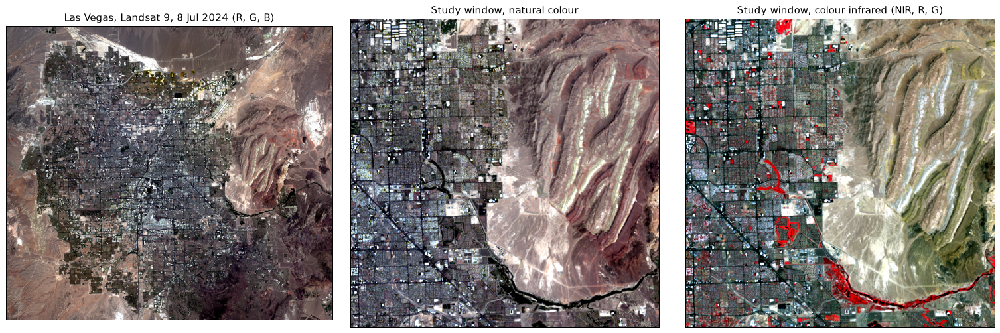
Code
# three 40 x 40 pixel sample boxes (rows, columns) in the study windowBOXES = {"Urban grid": (slice(100, 140), slice(40, 80)),"Alluvial fan": (slice(300, 340), slice(270, 310)), # gravel slopes"Mountain ridges": (slice(130, 170), slice(400, 440))} # rugged terrain# one colour per boxCOLORS = {"Urban grid": "#d7191c", "Alluvial fan": "#fdae61", "Mountain ridges": "#2b83ba"}# Colour-infrared input (NIR, red, green) as one DataArray with a leading "band" dimension.# NIR, red and green stacked as three channels (like an RGB photo)cir = sub[["nir", "red", "green"]].to_array("band")print(cir.dims, cir.shape) # dimensions and shape: (band, y, x)
('band', 'y', 'x') (3, 512, 512)
Inside the network: first-layer filters
The 64 kernels of ResNet-18’s first convolution (7 × 7 × 3) are shown as small RGB images. Most are oriented edge detectors and colour-opponent blobs, a learned counterpart of the Gabor bank in notebook 09_07_02.
Code
# ResNet-18 with ImageNet weights (downloaded once by timm)backbone = timm.create_model("resnet18", pretrained=True)# first convolution: 64 filters of 3 x 7 x 7w = backbone.conv1.weight.detach().numpy() # (64, 3, 7, 7)print("conv1 weights:", w.shape) # weight shapefig, axes = plt.subplots(4, 16, figsize=(16, 4.4)) # one panel per filterfor k, ax inenumerate(axes.ravel()): # loop over the 64 filters f = w[k].transpose(1, 2, 0) # (3, 7, 7) -> (7, 7, 3) for imshow f = (f - f.min()) / (f.max() - f.min()) # scale to 0-1 so it can be shown as colour ax.imshow(f, interpolation="nearest"); ax.set_xticks([]); ax.set_yticks([]) # show the filter, no ticksplt.suptitle("ResNet-18 first-layer filters (ImageNet)") # overall titleplt.tight_layout(); plt.show() # arrange and draw
conv1 weights: (64, 3, 7, 7)
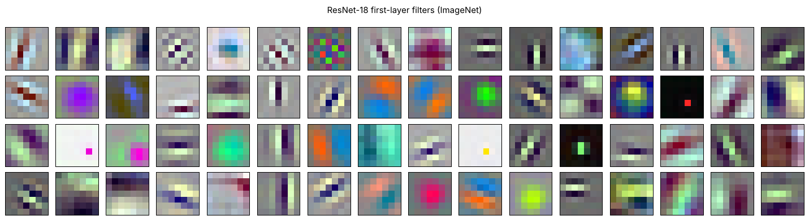
Many filters are oriented edge and bar detectors at different angles and widths, a learned version of the Gabor bank. Others are colour-opponent blobs (green against magenta, blue against orange) and a few are centre-surround or single-pixel detectors.
Feature maps of the ResNet-18 stages
tx.deep_texture_features(cir, layer=k) returns a Dataset with one variable per channel (deep_0, deep_1, …). With 64 to 256 channels, looking at maps one by one is impractical, so we project each pixel’s feature vector onto its first three principal components and show them as an RGB image: pixels with similar colours have similar deep features.
Code
def to_matrix(ds): # Dataset of feature maps -> (pixels, channels) array"""(pixels, channels) matrix of a deep-feature Dataset, in row-major (y, x) order."""return np.stack([ds[v].values.ravel() for v in ds.data_vars], axis=1) # one column per channeldef pca_rgb(ds, n=3): # show many channels as one colour image X = to_matrix(ds) # pixels x channels ok = np.isfinite(X).all(axis=1) # pixels without missing values pcs = np.full((X.shape[0], n), np.nan) # first n principal components per pixel pca = PCA(n).fit(X[ok][::7]) # fit on every seventh valid pixel (faster) pcs[ok] = pca.transform(X[ok]) # project all valid pixels lo, hi = np.nanpercentile(pcs, [2, 98], axis=0) # 2-98 % stretch per component# PC1-3 as red, green, blue rgb = np.clip((pcs - lo) / (hi - lo), 0, 1).reshape(ds.sizes["y"], ds.sizes["x"], n)return rgb, pca.explained_variance_ratio_ # image and explained variancedeep = {} # feature Dataset per ResNet stagerows = [] # summary rowsfig, axes = plt.subplots(1, 4, figsize=(21, 5.5)) # four panelsfor ax, layer inzip(axes, [0, 1, 2, 3]): # ResNet-18 stages 0-3 t0 = time.time() # time each stage# feature maps of this stage, resampled to the image grid deep[layer] = tx.deep_texture_features(cir, model_name="resnet18", layer=layer) secs = time.time() - t0 # run time rgb, evr = pca_rgb(deep[layer]) # colour composite of PC1-3 ax.imshow(rgb); ax.set_xticks([]); ax.set_yticks([]) # show it, no ticks# channels and explained variance ax.set_title(f"layer {layer}: {len(deep[layer].data_vars)} channels\nPC1-3 explain {evr.sum():.0%}")# summary row rows.append({"layer": layer, "channels": len(deep[layer].data_vars), "seconds": round(secs, 1),"PC1-3 variance": f"{evr.sum():.0%}"}) # as a percentageplt.tight_layout(); plt.show() # arrange and draw# show the tablepd.DataFrame(rows)
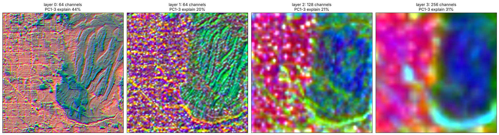
layer
channels
seconds
PC1-3 variance
0
0
64
0.5
44%
1
1
64
0.5
20%
2
2
128
0.9
21%
3
3
256
1.7
31%
Layer 0 (stride 2) looks like shaded relief: the stem filters respond to oriented gradients, so every ridge appears lit from one side. Three components explain 44% of the variance.
Layer 1 (stride 4) turns the city into a dense mosaic, the ridges into green streaks and outlines the Wash. Three components explain only 20%: the 64 channels carry many independent signals.
Layer 2 (stride 8) separates city, mountain and Wash as regions with sharp-ish boundaries.
Layer 3 (stride 16, receptive field about 6 km) keeps only broad regions.
On a CPU each pass over the 512 × 512 window takes 2 to 7 seconds.
Individual channels of layer 1
The eight layer-1 channels with the highest spatial variance.
Code
d1 = deep[1] # stage-1 featuresvar = {k: float(d1[k].var()) for k in d1.data_vars} # variance of each channeltop =sorted(var, key=var.get, reverse=True)[:8] # the eight most variable channelsfig, axes = plt.subplots(2, 4, figsize=(18, 9)) # 2 x 4 panelsfor ax, k inzip(axes.ravel(), top): # one panel per channel rs.viz.plot_raster(d1[k], ax=ax, cmap="magma", title=k) # draw it ax.set_xticks([]); ax.set_yticks([]) # no ticksplt.tight_layout(); plt.show() # arrange and draw# How many principal components are needed for layer 1?X1 = to_matrix(d1) # stage-1 features as pixels x channelspca1 = PCA(20).fit(X1[np.isfinite(X1).all(axis=1)][::7]) # 20 components fitted on every seventh valid pixelcum = np.cumsum(pca1.explained_variance_ratio_) # cumulative explained variance# how many components hold most of the informationprint("Cumulative variance of the first 10 PCs of layer 1:", np.round(cum[:10], 3))
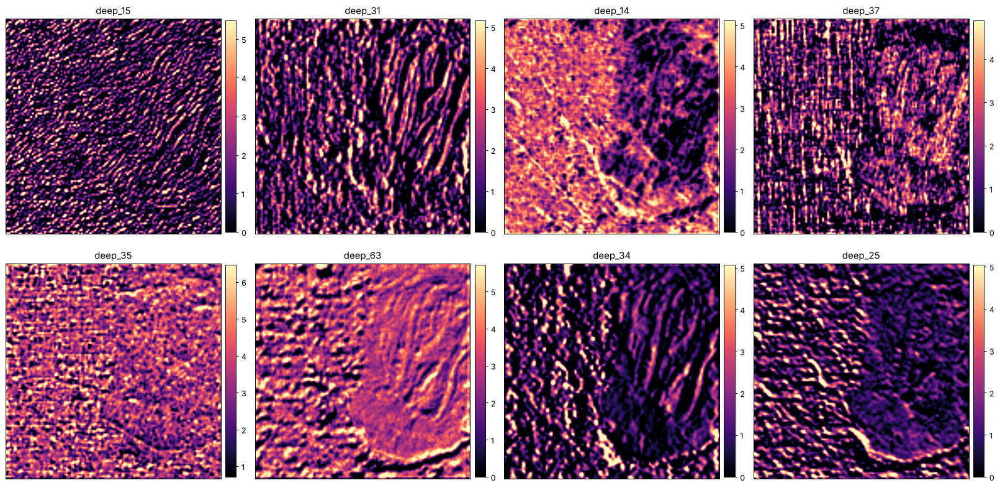
Cumulative variance of the first 10 PCs of layer 1: [0.08 0.142 0.199 0.252 0.305 0.353 0.397 0.438 0.476 0.51 ]
The first 10 principal components of layer 1 explain only 51% of the variance. Deep features are high- dimensional, and a compact stack needs at least 8 to 10 components.
Choosing the input bands
The network sees only three channels, so the band choice matters. We compare the colour-infrared composite, true colour, and the NIR band repeated three times (what the function does with a single band).
Code
inputs = {"NIR-red-green (CIR)": cir, # three ways to feed the 3-channel network"red-green-blue": sub[["red", "green", "blue"]].to_array("band"), # true colour"NIR only (repeated)": nir} # one band; GeoLattice repeats it to three channelsfeats_in = {} # stage-1 features per inputfig, axes = plt.subplots(2, 3, figsize=(16, 10.5)) # inputs (top), features (bottom)for j, (name, arr) inenumerate(inputs.items()): # one column per input feats_in[name] = tx.deep_texture_features(arr, layer=1) # stage-1 featuresif"band"in arr.dims: # multi-band inputs: show as colour# false or true colour rs.viz.plot_rgb(sub, "false_color"if"NIR-red"in name else"true_color", ax=axes[0, j], title=f"Input: {name}")else: # single band: grey image rs.viz.plot_raster(arr, ax=axes[0, j], cmap="gray", title=f"Input: {name}") # the NIR band rgb, evr = pca_rgb(feats_in[name]) # colour composite of the features axes[1, j].imshow(rgb); axes[1, j].set_title(f"Layer-1 features, PC1-3 ({evr.sum():.0%})") # show itfor a in axes.ravel(): # no ticks a.set_xticks([]); a.set_yticks([])plt.tight_layout(); plt.show() # arrange and draw
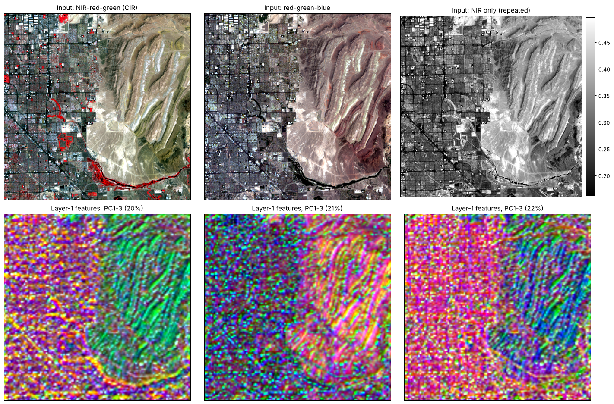
Code
# Agreement between inputs: correlation of the first principal component of each feature set.pc1 = {} # first principal component per inputfor name, ds in feats_in.items(): # loop over the inputs X = to_matrix(ds); ok = np.isfinite(X).all(axis=1) # pixels x channels; valid rows# PC1 of the valid pixels, NaN elsewhere p = np.full(X.shape[0], np.nan); p[ok] = PCA(1).fit_transform(X[ok])[:, 0] pc1[name] = p # store it# absolute correlation (the sign of a PC is arbitrary)pd.DataFrame(pc1).corr().abs().round(2)
NIR-red-green (CIR)
red-green-blue
NIR only (repeated)
NIR-red-green (CIR)
1.00
0.87
0.85
red-green-blue
0.87
1.00
0.89
NIR only (repeated)
0.85
0.89
1.00
The first principal components of the three inputs agree closely (|r| = 0.85 to 0.89): the dominant texture pattern does not depend much on the bands. The details do: the CIR input outlines the vegetated Wash and parks, which are dull in true colour.
Pooled tile descriptors: search and clustering
With reduce="mean", the function averages every channel over the whole input and returns one number per channel: a compact descriptor of the texture of an image tile. We cut the study window into 256 tiles of 32 × 32 pixels (960 m) and describe each with the 64 layer-1 means.
Code
T =32# tile size in pixels (960 m)n_t =512// T # 16 tiles per sidet0 = time.time() # start the timerdesc, centers = [], [] # descriptor and (row, col) of every tilefor i inrange(n_t): # tile rowsfor j inrange(n_t): # tile columns tile = cir.isel(y=slice(i * T, (i +1) * T), x=slice(j * T, (j +1) * T)) # the CIR pixels of this tile# stage-1 features averaged over the tile (one vector) d = tx.deep_texture_features(tile, layer=1, reduce="mean") desc.append([d[f"deep_{k}_mean"] for k inrange(len(d))]) # the vector as a list centers.append((i, j)) # tile positionD = np.array(desc) # tiles x featuresprint(f"{len(D)} tiles x {D.shape[1]} features in {time.time() - t0:.0f} s") # size and run time
256 tiles x 64 features in 41 s
Running the backbone on 256 separate tiles takes about 100 seconds on a CPU, because the model is built for every call. For many tiles it is much faster to run tx.deep_texture_features once on the whole window and average the feature maps per tile, for example with deep[1].coarsen(y=32, x=32).mean(); the result differs slightly at tile edges, where a single pass sees the neighbouring tiles.
Similarity search
Choose a query tile and rank all tiles by the cosine similarity of their standardized descriptors. This is content-based image retrieval: “find the places that look like this one”.
Code
from sklearn.preprocessing import StandardScaler # standardisationDz = StandardScaler().fit_transform(D) # each feature to mean 0, std 1Dn = Dz / np.linalg.norm(Dz, axis=1, keepdims=True) # unit-length rows, so a dot product is a cosine similarity# one query tile per landscapequeries = {"Urban grid": (3, 1), "Mountain ridges": (4, 13), "Alluvial fan": (9, 9)} # (tile row, tile col)fig, axes = plt.subplots(1, 4, figsize=(22, 5.5)) # query map and three similarity mapsrs.viz.plot_rgb(sub, "false_color", ax=axes[0], title="Query tiles") # background for the query tilesfor ax, (name, (qi, qj)) inzip(axes[1:], queries.items()): # loop over the queries q = qi * n_t + qj # row index of the query tile in D sim = (Dn @ Dn[q]).reshape(n_t, n_t) # cosine similarity of every tile to the query, as a 16 x 16 grid# drawn over the 512-pixel window im = ax.imshow(sim, cmap="RdYlBu_r", vmin=-1, vmax=1, extent=(0, 512, 512, 0)) ax.add_patch(Rectangle((qj * T, qi * T), T, T, fill=False, ec="k", lw=2.5)) # the query tile in black# and in its colour on the overview axes[0].add_patch(Rectangle((qj * T, qi * T), T, T, fill=False, ec=COLORS[name], lw=2.5)) ax.set_title(f"Cosine similarity to the {name.lower()} tile") # title plt.colorbar(im, ax=ax, fraction=0.046) # colour barfor a in axes: # no ticks a.set_xticks([]); a.set_yticks([])plt.tight_layout(); plt.show() # arrange and draw
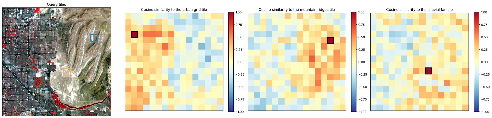
The urban query tile is similar (0.25 to 0.6) to almost every other city tile and dissimilar to the mountain and fan. The ridge query finds other ridge tiles across Frenchman Mountain. The fan query gives weak, scattered similarities: the fan has little texture, so its descriptor is close to the average of all tiles.
Code
from sklearn.cluster import KMeans # k-meansfrom matplotlib.colors import ListedColormap # a fixed four-colour mapkm_t = KMeans(4, n_init=10, random_state=0).fit(Dz) # four clusters of tile descriptorstile_map = km_t.labels_.reshape(n_t, n_t) # labels back on the 16 x 16 tile gridfig, axes = plt.subplots(1, 2, figsize=(13, 6)) # two panelsrs.viz.plot_rgb(sub, "false_color", ax=axes[0], title="Colour infrared") # reference image# tile clusters drawn over the 512-pixel windowaxes[1].imshow(tile_map, cmap=ListedColormap(["#66c2a5", "#fc8d62", "#8da0cb", "#e78ac3"]), extent=(0, 512, 512, 0), interpolation="nearest") # nearest: keep the tiles squareaxes[1].set_title("k-means (k = 4) on pooled deep descriptors, 960 m tiles") # titlefor a in axes: # no ticks a.set_xticks([]); a.set_yticks([])plt.tight_layout(); plt.show() # arrange and draw
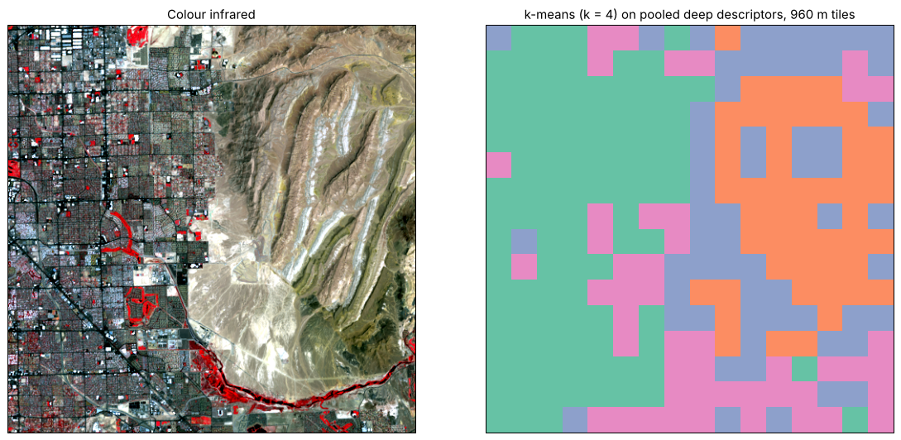
Four clusters of pooled descriptors map the main units of the window at 960 m: the city (green), the mountain core (orange), the fan and mountain margins (blue), and the Wash and the southern edge of the city (pink). For tile-level tasks such as scene classification or retrieval, pooled deep descriptors work well without any tuning.
Deep features and hand-crafted texture
How do the deep features relate to the classic measures of notebooks 09_07_01 to 09_07_04? We correlate the first five principal components of the layer-1 features with a few hand-crafted measures computed on NIR.
Code
t0 = time.time() # start the timerhand = xr.Dataset({ # hand-crafted texture layers from the earlier notebooks"NIR mean": tx.first_order_stats(nir, size=9, stats=("mean",))["mean"], # first-order mean"NIR std": tx.first_order_stats(nir, size=9, stats=("std",))["std"], # first-order standard deviation"GLCM contrast": tx.glcm_texture(nir, size=9, step=2, props=("contrast",))["contrast"], # GLCM contrast# GLCM correlation"GLCM correlation": tx.glcm_texture(nir, size=9, step=2, props=("correlation",))["correlation"],"Edge density": tx.edge_density(nir, size=9), # structural"MRF energy": tx.mrf_texture_energy(nir, size=9), # model-based"Fractal dim.": tx.fractal_dimension(nir, size=32, step=4), # model-based})print(f"hand-crafted features: {time.time() - t0:.1f} s") # run timeok = np.isfinite(X1).all(axis=1) # valid pixels of the stage-1 featurespcs = np.full((X1.shape[0], 5), np.nan) # first five deep principal componentspcs[ok] = PCA(5).fit(X1[ok][::7]).transform(X1[ok]) # fit on every seventh pixel, project allhdf = pd.DataFrame({v: hand[v].values.ravel() for v in hand.data_vars}) # hand-crafted features as columnsfor k inrange(5): # add the deep PCs as columns hdf[f"deep PC{k +1}"] = pcs[:, k] # one column per PC# rank correlation: hand-crafted (rows) vs deep PCs (columns)cc = hdf.corr(method="spearman").loc[list(hand.data_vars), [f"deep PC{k +1}"for k inrange(5)]]fig, ax = plt.subplots(figsize=(7, 5)) # one panelim = ax.imshow(cc, cmap="RdBu_r", vmin=-1, vmax=1) # the correlation matrixax.set_xticks(range(5), cc.columns); ax.set_yticks(range(len(cc)), cc.index) # labelsfor i inrange(cc.shape[0]): # write each value in its cellfor j inrange(cc.shape[1]): # columns ax.text(j, i, f"{cc.iloc[i, j]:.2f}", ha="center", va="center", fontsize=8) # two decimals# colour bar and titleplt.colorbar(im, shrink=0.8); ax.set_title("Spearman correlation: hand-crafted vs deep PCs (layer 1)")plt.tight_layout(); plt.show() # arrange and draw
hand-crafted features: 13.1 s
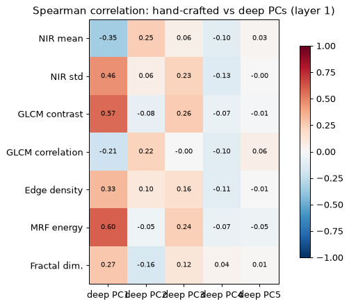
The first deep component is a roughness axis: it correlates with MRF energy (0.60), GLCM contrast (0.57), local std (0.46) and edge density (0.33). The second relates weakly to brightness and GLCM correlation. Components 3 to 5 have little counterpart among the hand-crafted measures: deep features reproduce the main roughness signal of classic texture and add other, less interpretable information.
Application: texture signatures and clustering
Three 40 × 40 pixel boxes (1.2 × 1.2 km), chosen by eye on the false-colour image, are used to compare texture signatures:
Box
Rows
Columns
Surface
Urban grid
100-140
40-80
Residential blocks and streets
Alluvial fan
300-340
270-310
Smooth bare desert soil
Mountain ridges
130-170
400-440
Folded sedimentary ridges of Frenchman Mountain
Code
# three 40 x 40 pixel sample boxes (rows, columns) in the study windowBOXES = {"Urban grid": (slice(100, 140), slice(40, 80)),"Alluvial fan": (slice(300, 340), slice(270, 310)), # gravel slopes east of the city"Mountain ridges": (slice(130, 170), slice(400, 440))} # rugged terrain# one colour per boxCOLORS = {"Urban grid": "#d7191c", "Alluvial fan": "#fdae61", "Mountain ridges": "#2b83ba"}fig, ax = plt.subplots(figsize=(6, 6)) # one panel# colour infrared backgroundrs.viz.plot_rgb(sub, "false_color", ax=ax, title="Sample boxes on the study window")for name, (ys, xs) in BOXES.items(): # draw each box# x = column start, y = row start, then width and height ax.add_patch(Rectangle((xs.start, ys.start), xs.stop - xs.start, ys.stop - ys.start,# outline only, labelled for the legend fill=False, ec=COLORS[name], lw=2.5, label=name))ax.legend(loc="lower left", fontsize=8); ax.set_xticks([]); ax.set_yticks([]) # legend, no ticksplt.show() # draw
Code
from sklearn.cluster import KMeans # k-means clusteringfrom sklearn.preprocessing import StandardScaler # standardise features to mean 0, std 1from scipy.ndimage import generic_filter # moving-window filter for the speckle measuredef box_means(ds): # average feature values per sample box"""Mean of every variable of `ds` inside each sample box."""# rows = features, columns = boxesreturn pd.DataFrame({name: {v: float(ds[v].isel(y=ys, x=xs).mean()) for v in ds.data_vars}for name, (ys, xs) in BOXES.items()})def plot_signatures(sig, title): # compare the boxes feature by feature"""Bar chart of box means, min-max scaled per feature across the three boxes."""# scale each feature to 0-1 across the three boxes norm = sig.sub(sig.min(axis=1), axis=0).div(sig.max(axis=1) - sig.min(axis=1), axis=0) fig, ax = plt.subplots(figsize=(max(7, 0.75*len(norm)), 4.5)) # width grows with the number of features x = np.arange(len(norm)) # one group of bars per featurefor k, name inenumerate(norm.columns): # one bar per box, shifted sideways ax.bar(x + (k -1) *0.27, norm[name], width=0.27, color=COLORS[name], label=name) # draw the bars ax.set_xticks(x, norm.index, rotation=45, ha="right") # feature names, rotated ax.set(ylabel="Relative value (0 = lowest box, 1 = highest)", title=title) # labels ax.legend(); plt.tight_layout(); plt.show() # legend and drawdef kmeans_map(ds, k=5, n_fit=40000, seed=0): # unsupervised map from a set of layers"""Standardize the layers, fit k-means on a random pixel sample and label every pixel.""" df = ds.to_dataframe(dim_order=["y", "x"])[list(ds.data_vars)] # pixels as rows, layers as columns ok = df.notna().all(axis=1).values # pixels without missing values X = StandardScaler().fit_transform(df[ok].values) # standardise so every layer weighs the same rng = np.random.default_rng(seed) # random sample generator# fit on at most 40,000 random pixels (faster) km = KMeans(k, n_init=10, random_state=seed).fit(X[rng.choice(len(X), min(n_fit, len(X)), replace=False)]) lab = np.full(ok.size, np.nan); lab[ok] = km.predict(X) # label all valid pixels; others stay NaN# labels back on the image gridreturn xr.DataArray(lab.reshape(ds.sizes["y"], ds.sizes["x"]), coords={"y": ds.y, "x": ds.x}, dims=("y", "x"))def speckle(lab): # how noisy a cluster map is"""Share of pixels whose label differs from the majority label of their 3 x 3 neighbourhood.""" a = np.nan_to_num(lab.values, nan=-1).astype(int) # NaN -> -1 so the labels are integers# majority label in each 3 x 3 window mode = generic_filter(a, lambda v: np.bincount(v.astype(int) +1).argmax() -1, size=3)returnfloat((a != mode).mean()) # share of pixels that differ from their neighbourhood majoritydef box_purity(lab): # how uniform each box is in a cluster map"""Share of each box's pixels that fall in the box's most common cluster.""" out = {} # one value per boxfor name, (ys, xs) in BOXES.items(): # loop over the boxes v = lab.isel(y=ys, x=xs).values.ravel() # labels inside the box v = v[np.isfinite(v)].astype(int) # drop missing labels out[name] = np.bincount(v).max() / v.size # share of the most common labelreturn out # dictionary box -> purity# Spectral layers used as the baseline in every notebook: the four bands and NDVI.# normalised difference vegetation indexndvi = ((sub["nir"] - sub["red"]) / (sub["nir"] + sub["red"])).rename("NDVI")spectral = xr.Dataset({**{b: sub[b] for b in BANDS}, "NDVI": ndvi}) # four bands plus NDVI
Code
# The first 8 principal components of the layer-1 features as a compact deep-texture stack.n_pc =8# number of components keptpcs8 = np.full((X1.shape[0], n_pc), np.nan) # PC scores per pixelpcs8[ok] = PCA(n_pc).fit(X1[ok][::7]).transform(X1[ok]) # fit on every seventh pixel, project all# each PC as a layer on the NIR griddl_feats = xr.Dataset({f"deep PC{k +1}": nir.copy(data=pcs8[:, k].reshape(nir.shape)) for k inrange(n_pc)})sig = box_means(dl_feats) # mean of each PC in each box# show the tablesig.round(3)
Urban grid
Alluvial fan
Mountain ridges
deep PC1
1.545
-1.336
-1.141
deep PC2
-0.681
0.224
-0.032
deep PC3
0.482
-0.649
-0.127
deep PC4
-0.168
0.133
-0.475
deep PC5
0.500
0.049
0.725
deep PC6
-0.003
0.913
0.552
deep PC7
0.045
0.376
-0.077
deep PC8
0.373
-0.710
-0.305
Code
plot_signatures(sig, "Deep texture signatures (ResNet-18 layer 1, PC1-8)") # bar chart of the box signatures
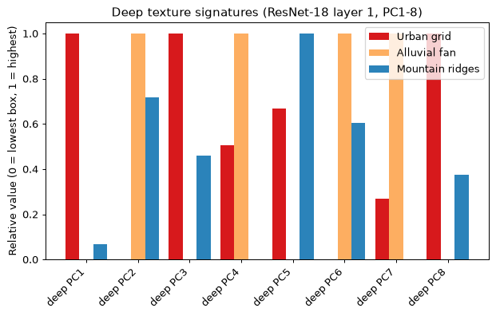
PC1 separates the city (+1.5) from the fan (−1.3) and the ridges (−1.1), confirming it as the roughness axis. Later components separate the fan from the ridges (for example PC6 and PC8), which most hand-crafted features could not.
Does this family add information? A clustering test
Texture is useful only if it carries information that the spectral bands do not. We run k-means with 5 clusters on (a) the four bands and NDVI only and (b) the same spectral layers plus this notebook’s texture features, all standardized. Two numbers summarize the maps:
Speckle: the share of pixels whose cluster differs from the majority of their 3 × 3 neighbourhood (lower = more spatially coherent).
Purity: the share of pixels in each sample box that fall in that box’s most common cluster (higher = the surface is mapped as one unit).
Code
def compare_clusterings(texture_ds, label): # clustering with and without the texture layers"""k-means on spectral layers only vs spectral + texture layers; maps, speckle and box purity.""" k_spec = kmeans_map(spectral) # five spectral layers k_both = kmeans_map(xr.merge([spectral, texture_ds], compat="override")) # spectral plus texture layers fig, axes = plt.subplots(1, 3, figsize=(18, 6)) # three panels rs.viz.plot_rgb(sub, "false_color", ax=axes[0], title="Colour infrared") # reference imagefor ax, lab, t inzip(axes[1:], [k_spec, k_both], # the two cluster maps with their titles ["k-means, spectral only (5 layers)",f"k-means, spectral + {label} ({5+len(texture_ds.data_vars)} layers)"]): ax.imshow(lab, cmap="Set2", interpolation="nearest") # one colour per cluster ax.set_title(f"{t}\nspeckle = {speckle(lab):.1%}") # title with the speckle sharefor a in axes: # no pixel ticks a.set_xticks([]); a.set_yticks([]) plt.tight_layout(); plt.show() # arrange and drawreturn pd.DataFrame({"spectral only": box_purity(k_spec), # box purity of both maps, as percentages# format each value as a percentagef"spectral + {label}": box_purity(k_both)}).map(lambda v: f"{v:.0%}")
Code
compare_clusterings(dl_feats, "deep texture") # maps, speckle and box purity
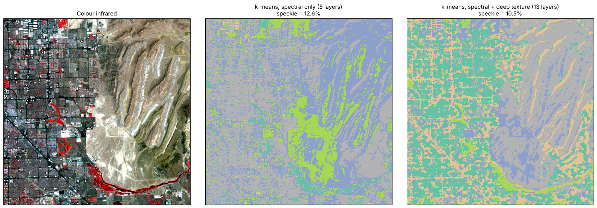
spectral only
spectral + deep texture
Urban grid
53%
45%
Alluvial fan
58%
75%
Mountain ridges
66%
72%
At pixel level, layer-1 features reduce speckle only a little (10.5%) and raise purity on the fan (75%) and the ridges (72%), but the city is split into block-scale clusters (purity 45%). Unsupervised k-means weights all 8 components equally, including components that describe city-block detail.
Scale matters: layer 2 instead of layer 1
The same test with the first 8 principal components of layer 2 (stride 8, receptive field about 3 km) instead of layer 1.
Code
X2 = to_matrix(deep[2]) # stage-2 features as pixels x channelsok2 = np.isfinite(X2).all(axis=1) # valid pixelspcs2 = np.full((X2.shape[0], n_pc), np.nan) # eight PCs per pixelpcs2[ok2] = PCA(n_pc).fit(X2[ok2][::7]).transform(X2[ok2]) # fit on every seventh pixel, project all# PCs as layers on the NIR griddl2_feats = xr.Dataset({f"deep L2 PC{k +1}": nir.copy(data=pcs2[:, k].reshape(nir.shape)) for k inrange(n_pc)})compare_clusterings(dl2_feats, "deep texture, layer 2") # the same comparison with stage-2 features
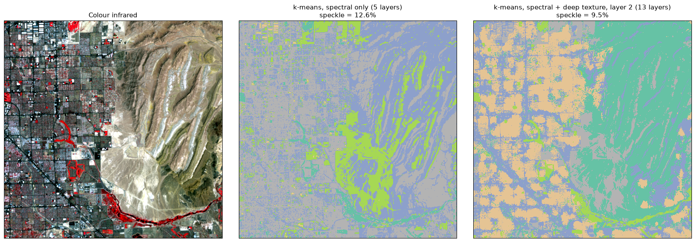
spectral only
spectral + deep texture, layer 2
Urban grid
53%
47%
Alluvial fan
58%
67%
Mountain ridges
66%
79%
Layer 2 (larger receptive field) gives slightly more coherent maps (speckle 9.5%) and the highest ridge purity of the two (79%), while the city stays split (47%). For pixel-level mapping, deep features need a supervised classifier that learns which components matter; for tile-level description they work well as they are (see Pooled tile descriptors).
Code
OUT = Path("outputs") /"texture"# output folder for texture rastersOUT.mkdir(parents=True, exist_ok=True) # create it if needed# Dataset -> one multi-band GeoTIFF (one band per feature)dl_feats.to_array("feature").astype("float32").rio.write_crs(ls.rio.crs).rio.to_raster(OUT /"cir_deep_texture_pcs.tif")with rasterio.open(OUT /"cir_deep_texture_pcs.tif") as src: # read the file back to check it# number of bands, size and CRSprint(f"cir_deep_texture_pcs.tif: {src.count} bands, {src.width} x {src.height}, {src.crs}")
cir_deep_texture_pcs.tif: 8 bands, 512 x 512, EPSG:32611
Summary and exercises
Key points
CNN feature maps are the responses of learned filter banks. Early layers respond to edges, colour contrasts and simple textures and transfer well from ImageNet to satellite images.
tx.deep_texture_features turns any three bands into tens to hundreds of texture layers, with no texture parameters to tune; the choice of layer sets the spatial scale.
PCA makes the many channels interpretable and gives a compact stack for classification.
Pooled (reduce="mean") descriptors describe whole tiles and support similarity search and tile clustering.
The first deep component is a roughness axis that correlates moderately (up to 0.6) with MRF energy and GLCM contrast; the other components add information that hand-crafted measures do not capture.
At 30 m, the large receptive fields of deeper stages blur boundaries. Layers 1 and 2 balance detail and context for pixel-level Landsat work, and pixel-level use needs a supervised classifier; pooled tile descriptors work well without one.
Repeat the ResNet-18 feature maps with model_name="resnet50" or "efficientnet_b0". Are the layer-1 features different?
Compute the Gram matrix of the layer-1 feature maps for each 32 × 32 tile and use its upper triangle as a descriptor. Does tile clustering improve?
Build the tile descriptors from SWIR1-NIR-red instead of NIR-red-green.
Pansharpen the scene to 15 m (Landsat band 8) and compare the layer-1 features with the 30 m result.
Label 50 tiles by hand (urban, desert, mountain, water/vegetation) and train a logistic regression on the pooled descriptors. How many labels do you need for 90% accuracy?
References
Cimpoi, M., Maji, S. and Vedaldi, A. (2015). Deep filter banks for texture recognition and segmentation. CVPR, 3828-3836.
Gatys, L.A., Ecker, A.S. and Bethge, M. (2015). Texture synthesis using convolutional neural networks. NeurIPS, 262-270.
He, K., Zhang, X., Ren, S. and Sun, J. (2016). Deep residual learning for image recognition. CVPR, 770-778.
Hu, F., Xia, G.-S., Hu, J. and Zhang, L. (2015). Transferring deep convolutional neural networks for the scene classification of high-resolution remote sensing imagery. Remote Sensing, 7(11), 14680-14707.
Penatti, O.A.B., Nogueira, K. and dos Santos, J.A. (2015). Do deep features generalize from everyday objects to remote sensing and aerial scenes domains? CVPR Workshops, 44-51.
Zeiler, M.D. and Fergus, R. (2014). Visualizing and understanding convolutional networks. ECCV, 818-833.